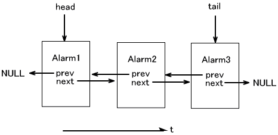
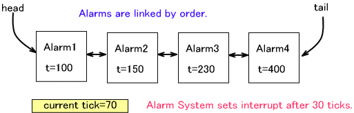
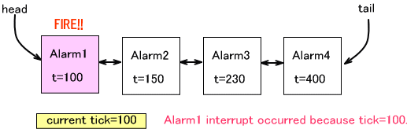
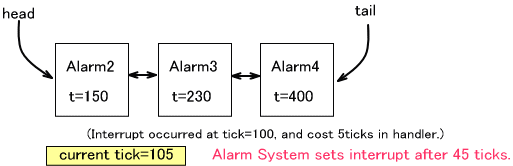

アラームは、4つあるハードウェアタイマの1つを利用して、アプリケーションが指定した時刻に割り込みを発生させるシステムです。時刻の基準には、チックシステムのチック値を使用しますので、チックシステムが動作していなければなりません。従って、アラームシステムを使用する場合は、チックシステムがハードウェアタイマの1つを使用し、アラームが別のハードウェアタイマを1つ使用するので、ユーザに開放されるタイマは残りの2つということになります。
初期化
アラームシステムを使用するときは、最初に一度 OS_InitAlarm() を呼んでください。ただし OS_InitAlarm() を呼び出す前にチックシステムの初期化関数
OS_InitTick() が呼ばれている必要があります。
アラームシステムが使用可能かどうかは OS_IsAlarmAvailable() で調べることが出来ます。
アラームシステムに割り当てていたハードウェアタイマを開放し、アラームシステムを終了するには OS_EndAlarm() を呼んでください。
アラームの設定
アラームを設定するには OSAlarm 構造体オブジェクトを用意してください。このオブジェクト1つに対し、1つのアラームを設定することが出来ます。オブジェクトは
OS_CreateAlarm() で初期化してください。
アラームの設定は OS_SetAlarm() 関数を用います。設定は、指定のハンドラを呼ばせたい時刻 ( 現在を基準とした相対時刻 ) を、チック値で指定します。
一定の周期でアラームハンドラが呼ばれるように設定にする OS_SetPeriodicAlarm() という周期アラーム設定関数も用意されています。
指定の時刻に、別の割り込み処理や、別のアラームハンドラなどが動作しているために割り込むことが出来なかったアラームは、割り込みが可能になったときにすぐにアラームハンドラが呼ばれます。このように割り込みが遅延されることもあります。遅延されたアラームが複数ある場合は、それらは連続して呼び出されます。
通常は、割り込みハンドラはすぐに終わるような処理を行なうように推奨されています。
アラームのキャンセル
設定したアラームをキャンセルする場合は OS_CancelAlarm() を呼んでください。これは指定した 1つのアラームをキャンセルします。
すべてのアラームをキャンセルする場合は OS_CancelAllAlarm() を呼んでください。
タグ値を指定してキャンセルする方法もあります。(後述)
アラームタグについて
アラームには、1〜255のタグ値を与えることができます。この値は、あるタグ値のアラームをすべてキャンセルする、という用途で使用します。
タグ値はすでに設定されたアラームに対し OS_SetAlarmTag() でセットします。
タグ値を指定してキャンセルする関数は OS_CancelAlarms() となります。( 複数形の「s」が付いています。)
内部データ構造
アラーム構造体 OSAlarm は、アラームの発生順にリンクリストで繋がっています。

従って、そのアラーム構造体がまだリストに繋がっている(すなわち、まだアラームが発生していない)ものを使って別のアラームをセットしようとすると、リンク構造が崩れることになってしまいますのでこのようなことは行なわないでください。これを検出すると、ライブラリではビルドに関係なく
OS_Panic() で停止します。
また、まだリストに繋がっている状態で(すなわち、まだアラームが発生していない状態で)、アラーム構造体に対し OS_CreateAlarm() で初期化を行なうこともリンク構造の破綻につながるため禁じられています。この場合、動作は不定となります。
複数のアラームの扱い
アラームシステムが使用するタイマは 1 つですが、アプリケーションでは複数のアラームを同時に設定することが可能です。これは、内部でアラームを到達時刻の早いものから順にリストとして保持しており、リストの前から順に処理しているからです。つまり内部では一番到達時刻の早いアラームだけをハートウェアタイマを使ってアラーム処理を行ない、それが完了した後に次のアラームの処理行なうということを繰り返して複数のアラームを同時に設定出来るようにしています。
例えば、以下のように4つのアラームが設定されているとします。現在時刻(チック値)は70であり、最も到達時刻の早いアラームは Alarm1 です。アラームシステムは、Alarm1 のためのタイマ割り込みを 30チックカウント後に発生するように設定します。

時刻が 100 になると、Alarm1 のタイマ割り込みが掛かり、アラームハンドラが呼ばれます。

その処理が終わった時刻を基準に次のアラームを設定します。下図の場合ですと、アラーム処理が終わった時刻が 105 で、次のアラームである Alarm2 は時刻 150 で割り込み発生させたいので、45 チックカウント後にタイマ割り込みが掛かるように設定します。

以下、この繰り返しとなります。
アラームハンドラ内でのキャンセル・設定
アラームハンドラ内で自らをキャンセルしたり再設定することについて説明します。
(1) 通常の一度のみのアラームがアラームハンドラで自らのアラームをキャンセルすることについて
ハンドラが呼ばれている時点でアラームは発生していますので、自らのアラームキャンセルを行なう必要はありませんし、意味がありません。
(2) 通常の一度のみのアラームがアラームハンドラで自らのアラームを使用して再設定することについて
すでにそのアラームの OSAlarm 構造体オブジェクトはアラームリストから外れているので、再設定を行なうことは可能です。キャンセルは不要です。
(3) 周期アラームがアラームハンドラで自らのアラームをキャンセルすることについて
周期アラームの場合、アラームハンドラで自らのアラームをキャンセルすることができます。
(4) 周期アラームがアラームハンドラで自らのアラームを使用して再設定することについて
一度キャンセルした後に、そのアラームオブジェクトを用いて新たなアラームの設定を行なうことができます。
使用するハードウェアタイマ
アラームシステムはタイマ1を用います。このタイマチャンネルは、アプリケーションで使用することは出来ません。OS
のタイマ関数では、DEBUGビルドのときには SDK_ASSERT によるチェックを行ないます。
2006/05/12 誤字の修正
2005/03/08 用語統一 [割込み] → [割り込み]
2004/11/05 初版